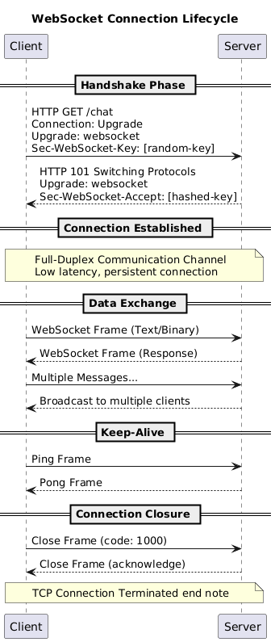
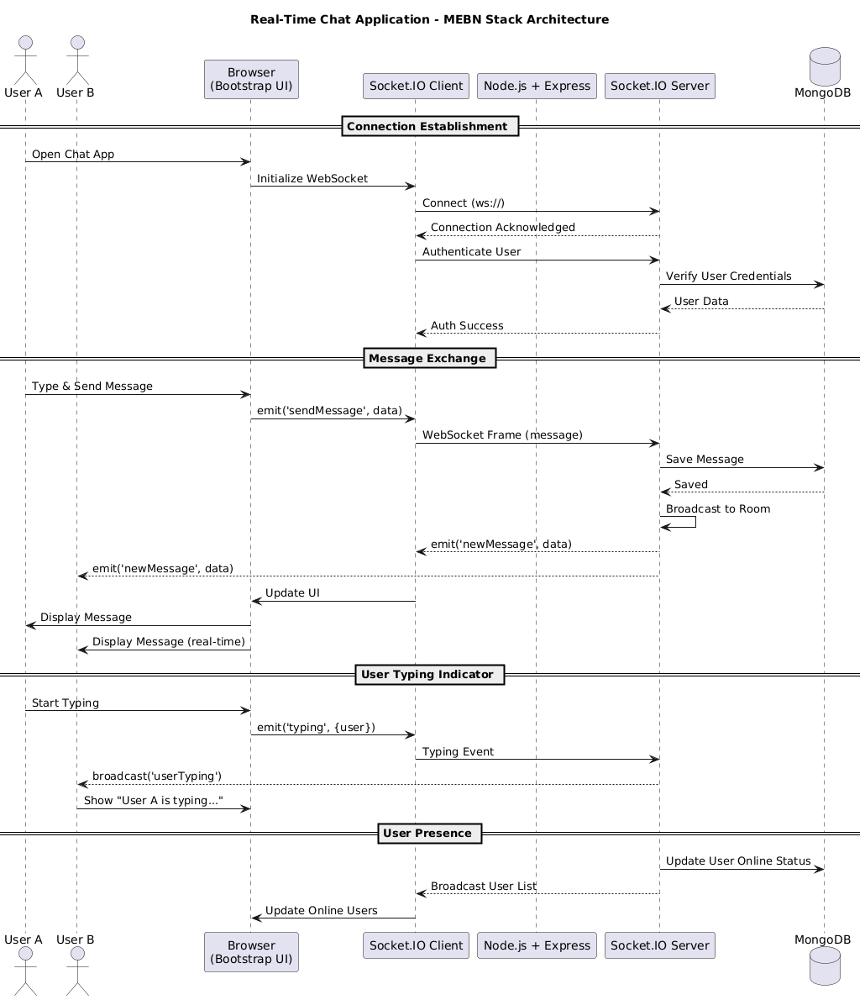

Build Real-Time Applications with Full-Duplex Communication
Master WebSocket protocol, architecture, and build production-ready real-time apps with MEBN Stack
Get StartedWebSocket is a communication protocol that provides full-duplex communication channels over a single TCP connection. Unlike HTTP, which follows a request-response model, WebSockets enable persistent, bidirectional communication between client and server.
WebSockets were standardized by the IETF as RFC 6455 in 2011 and are now supported by all modern browsers. The protocol enables:
Reduced overhead compared to HTTP polling, enabling efficient real-time communication.
Single protocol for bidirectional communication, easier than managing multiple HTTP requests.
Understanding the WebSocket architecture is crucial for building robust real-time applications.
@startuml
title WebSocket Connection Lifecycle
participant Client
participant Server
== Handshake Phase ==
Client -> Server: HTTP GET /chat\nConnection: Upgrade\nUpgrade: websocket\nSec-WebSocket-Key: [random-key]
Server --> Client: HTTP 101 Switching Protocols\nUpgrade: websocket\nSec-WebSocket-Accept: [hashed-key]
== Connection Established ==
note over Client, Server
Full-Duplex Communication Channel
Low latency, persistent connection
end note
== Data Exchange ==
Client -> Server: WebSocket Frame (Text/Binary)
Server --> Client: WebSocket Frame (Response)
Client -> Server: Multiple Messages...
Server --> Client: Broadcast to multiple clients
== Keep-Alive ==
Client -> Server: Ping Frame
Server --> Client: Pong Frame
== Connection Closure ==
Client -> Server: Close Frame (code: 1000)
Server --> Client: Close Frame (acknowledge)
note over Client, Server: TCP Connection Terminated end note
@enduml
A rich ecosystem of libraries, frameworks, and tools makes WebSocket development easier across different platforms.
Feature-rich library with fallbacks, rooms, and namespaces. Works with Node.js.
npm install socket.ioFast, simple WebSocket library for Node.js with minimal overhead.
npm install wsUltra-fast WebSocket server written in C++, with Node.js bindings.
npm install uWebSockets.jsWebSocket implementation for Python using asyncio.
pip install websocketsBrowser's native WebSocket implementation, no library needed.
new WebSocket(url)Client library for Socket.IO with auto-reconnect and fallbacks.
npm install socket.io-clientWebSocket wrapper with automatic reconnection logic.
npm install reconnecting-websocketUnderstanding the strengths and limitations helps you decide when to use WebSockets.
Instant bidirectional data transfer without polling overhead. Perfect for live updates.
Persistent connection eliminates handshake overhead for each message, reducing latency significantly.
No HTTP headers sent with each message after connection, saving bandwidth for high-frequency updates.
Server can push data to clients without waiting for requests, enabling event-driven architecture.
Supported by all modern browsers and mobile platforms. IE 10+ and all evergreen browsers.
Maintains persistent connections, consuming server memory and requiring careful resource management.
Requires sticky sessions and message brokers (Redis) for horizontal scaling across multiple servers.
Vulnerable to XSS, CSRF attacks. No built-in authentication. Requires additional security layers.
Some corporate proxies and firewalls may block WebSocket connections or terminate idle connections.
Requires implementation of reconnection logic, heartbeat mechanisms, and connection state management.
WebSockets excel in scenarios requiring real-time, bidirectional communication.
Why WebSockets? Instant message delivery, typing indicators, presence detection.
Examples: Slack, WhatsApp Web, Discord
Why WebSockets? Real-time stock prices, order book updates, market data streams.
Examples: Robinhood, Binance, TradingView
Why WebSockets? Low-latency player actions, game state synchronization.
Examples: Agar.io, Slither.io, Chess.com
Why WebSockets? Real-time document synchronization, cursor positions, live updates.
Examples: Google Docs, Figma, CodeSandbox
Why WebSockets? Instant push notifications, activity feeds, real-time alerts.
Examples: Facebook, Twitter, LinkedIn
Why WebSockets? Continuous data feeds, dashboards, monitoring systems.
Examples: IoT dashboards, Analytics, Sports scores
Comparing WebSockets with alternative real-time communication technologies.
| Feature | WebSockets | HTTP Polling |
|---|---|---|
| Connection Type | Persistent, bidirectional | Multiple short-lived connections |
| Latency | Very low (instant) | High (polling interval + network delay) |
| Bandwidth Usage | Low (minimal overhead) | High (HTTP headers on every request) |
| Server Load | Moderate (persistent connections) | High (constant requests) |
| Real-Time Capability | Excellent | Poor (depends on polling frequency) |
| Implementation Complexity | Moderate | Simple |
| Best For | High-frequency, real-time updates | Infrequent updates, simple scenarios |
| Feature | WebSockets | Long Polling |
|---|---|---|
| Connection Pattern | Single persistent connection | Sequential long-lived requests |
| Server Push | Native support | Simulated (response held until data available) |
| Latency | Very low | Low (but requires reconnection) |
| Overhead | Minimal after handshake | Moderate (reconnection overhead) |
| Firewall Compatibility | Sometimes blocked | Better (uses standard HTTP) |
| Scalability | Requires connection management | Easier (stateless requests) |
| Best For | True real-time, high-frequency updates | Fallback mechanism, moderate real-time needs |
| Feature | WebSockets | Server-Sent Events (SSE) |
|---|---|---|
| Communication | Full-duplex (bidirectional) | Simplex (server to client only) |
| Protocol | WebSocket protocol | HTTP/2 or HTTP/1.1 |
| Data Format | Text or binary | Text only (UTF-8) |
| Automatic Reconnection | Manual implementation required | Built-in automatic reconnection |
| Browser Support | All modern browsers | All modern browsers (not IE) |
| Message IDs | Not built-in | Built-in event IDs and types |
| Best For | Chat, gaming, collaborative apps | Live feeds, notifications, stock tickers |
| Feature | WebSockets | WebRTC |
|---|---|---|
| Architecture | Client-Server | Peer-to-Peer |
| Primary Use Case | Data messaging | Audio/Video streaming, Data channels |
| Latency | Very low (via server) | Ultra-low (direct peer connection) |
| Setup Complexity | Simple | Complex (signaling, STUN/TURN servers) |
| Reliability | TCP (guaranteed delivery) | UDP (optional reliability) |
| Bandwidth | Moderate | High (media streams) |
| Best For | Chat, notifications, data sync | Video calls, file sharing, gaming |
Complete reference for the WebSocket API available in modern browsers.
// Create a new WebSocket connection
const socket = new WebSocket('ws://localhost:8080');
// Secure WebSocket connection
const secureSocket = new WebSocket('wss://example.com/socket');
// With sub-protocols
const socketWithProtocol = new WebSocket('ws://localhost:8080', ['protocol1', 'protocol2']);| Property | Type | Description |
|---|---|---|
socket.readyState |
Number | Connection state: CONNECTING (0), OPEN (1), CLOSING (2), CLOSED (3) |
socket.url |
String | The WebSocket URL |
socket.protocol |
String | The sub-protocol selected by the server |
socket.bufferedAmount |
Number | Number of bytes queued but not yet sent |
socket.extensions |
String | Extensions selected by the server |
socket.binaryType |
String | Binary data type: 'blob' (default) or 'arraybuffer' |
socket.send(data)Purpose: Send data through the WebSocket connection
Parameters: String, Blob, ArrayBuffer, or ArrayBufferView
// Send text
socket.send('Hello Server');
// Send JSON
socket.send(JSON.stringify({
type: 'message',
content: 'Hello'
}));
// Send binary
const buffer = new ArrayBuffer(8);
socket.send(buffer);socket.close([code], [reason])Purpose: Close the WebSocket connection
Parameters: Optional close code and reason
// Normal closure
socket.close();
// With code and reason
socket.close(1000, 'Work complete');
// Common close codes:
// 1000 - Normal closure
// 1001 - Going away
// 1002 - Protocol error
// 1003 - Unsupported dataTriggered: When the connection is successfully established
socket.onopen = (event) => {
console.log('WebSocket connection opened:', event);
console.log('Ready state:', socket.readyState); // 1 (OPEN)
// Now safe to send messages
socket.send('Hello Server!');
};Triggered: When a message is received from the server
socket.onmessage = (event) => {
console.log('Message received:', event.data);
// Handle text data
if (typeof event.data === 'string') {
const message = JSON.parse(event.data);
console.log('Parsed message:', message);
}
// Handle binary data
if (event.data instanceof Blob) {
const reader = new FileReader();
reader.onload = () => console.log(reader.result);
reader.readAsText(event.data);
}
};Triggered: When an error occurs with the connection
socket.onerror = (error) => {
console.error('WebSocket error:', error);
console.log('Error event:', error);
// Note: Error details are limited for security reasons
// The error event doesn't contain much information
// Handle error (e.g., show user notification)
showErrorNotification('Connection error occurred');
};Triggered: When the connection is closed
socket.onclose = (event) => {
console.log('WebSocket connection closed');
console.log('Close code:', event.code);
console.log('Close reason:', event.reason);
console.log('Was clean close:', event.wasClean);
// Handle different close codes
if (event.code === 1000) {
console.log('Normal closure');
} else if (event.code === 1006) {
console.log('Abnormal closure (e.g., network error)');
// Attempt reconnection
setTimeout(() => reconnect(), 5000);
}
};// Complete WebSocket client implementation
class WebSocketClient {
constructor(url) {
this.url = url;
this.socket = null;
this.reconnectAttempts = 0;
this.maxReconnectAttempts = 5;
}
connect() {
this.socket = new WebSocket(this.url);
this.socket.binaryType = 'arraybuffer'; // or 'blob'
this.socket.onopen = (event) => {
console.log('Connected to WebSocket server');
this.reconnectAttempts = 0;
this.onConnect && this.onConnect(event);
};
this.socket.onmessage = (event) => {
try {
const data = JSON.parse(event.data);
this.onMessage && this.onMessage(data);
} catch (e) {
console.error('Failed to parse message:', e);
}
};
this.socket.onerror = (error) => {
console.error('WebSocket error:', error);
this.onError && this.onError(error);
};
this.socket.onclose = (event) => {
console.log('Connection closed:', event.code, event.reason);
this.onClose && this.onClose(event);
// Auto-reconnect
if (!event.wasClean && this.reconnectAttempts < this.maxReconnectAttempts) {
this.reconnectAttempts++;
console.log(`Reconnecting... Attempt ${this.reconnectAttempts}`);
setTimeout(() => this.connect(), 3000);
}
};
}
send(data) {
if (this.socket.readyState === WebSocket.OPEN) {
this.socket.send(JSON.stringify(data));
} else {
console.error('WebSocket is not open. Ready state:', this.socket.readyState);
}
}
close() {
this.socket.close(1000, 'Client closing connection');
}
}
// Usage
const client = new WebSocketClient('ws://localhost:8080');
client.onConnect = () => console.log('Connected!');
client.onMessage = (data) => console.log('Received:', data);
client.connect();A complete real-time chat application using MongoDB, Express, Bootstrap, and Node.js with WebSockets.
@startuml
title Real-Time Chat Application - MEBN Stack Architecture
actor "User A" as userA
actor "User B" as userB
participant "Browser\n(Bootstrap UI)" as browser
participant "Socket.IO Client" as socketClient
participant "Node.js + Express" as express
participant "Socket.IO Server" as socketServer
database "MongoDB" as mongo
== Connection Establishment ==
userA -> browser: Open Chat App
browser -> socketClient: Initialize WebSocket
socketClient -> socketServer: Connect (ws://)
socketServer --> socketClient: Connection Acknowledged
socketClient -> socketServer: Authenticate User
socketServer -> mongo: Verify User Credentials
mongo --> socketServer: User Data
socketServer --> socketClient: Auth Success
== Message Exchange ==
userA -> browser: Type & Send Message
browser -> socketClient: emit('sendMessage', data)
socketClient -> socketServer: WebSocket Frame (message)
socketServer -> mongo: Save Message
mongo --> socketServer: Saved
socketServer -> socketServer: Broadcast to Room
socketServer --> socketClient: emit('newMessage', data)
socketServer --> userB: emit('newMessage', data)
socketClient -> browser: Update UI
browser -> userA: Display Message
browser -> userB: Display Message (real-time)
== User Typing Indicator ==
userA -> browser: Start Typing
browser -> socketClient: emit('typing', {user})
socketClient -> socketServer: Typing Event
socketServer --> userB: broadcast('userTyping')
userB -> browser: Show "User A is typing..."
== User Presence ==
socketServer -> mongo: Update User Online Status
socketServer --> socketClient: Broadcast User List
socketClient -> browser: Update Online Users
@enduml
# Initialize project
mkdir websocket-chat-app
cd websocket-chat-app
npm init -y
# Install dependencies
npm install express socket.io mongoose dotenv bcryptjs jsonwebtoken
npm install -D nodemon// server.js
const express = require('express');
const http = require('http');
const socketIo = require('socket.io');
const mongoose = require('mongoose');
const path = require('path');
require('dotenv').config();
const app = express();
const server = http.createServer(app);
const io = socketIo(server, {
cors: {
origin: process.env.ALLOWED_ORIGINS?.split(',') || "http://localhost:3000",
methods: ["GET", "POST"]
}
});
// Middleware
app.use(express.json());
app.use(express.static(path.join(__dirname, 'public')));
// MongoDB Connection
// Note: useNewUrlParser and useUnifiedTopology are deprecated in Mongoose 6+
mongoose.connect(process.env.MONGODB_URI || 'mongodb://localhost:27017/websocket-chat')
.then(() => console.log('MongoDB connected'))
.catch(err => console.error('MongoDB connection error:', err));
// Models
const Message = require('./models/Message');
const User = require('./models/User');
const Room = require('./models/Room');
// Store active users
const activeUsers = new Map();
// Socket.IO Connection Handler
io.on('connection', (socket) => {
console.log('New client connected:', socket.id);
// User joins with username
socket.on('join', async ({ username, room }) => {
try {
// Add user to active users
activeUsers.set(socket.id, { username, room });
socket.join(room);
// Load recent messages
const messages = await Message.find({ room })
.sort({ timestamp: -1 })
.limit(50)
.populate('sender', 'username');
socket.emit('loadMessages', messages.reverse());
// Notify room about new user
io.to(room).emit('userJoined', {
username,
message: `${username} has joined the chat`,
timestamp: new Date()
});
// Send updated user list
const roomUsers = Array.from(activeUsers.values())
.filter(user => user.room === room)
.map(user => user.username);
io.to(room).emit('updateUserList', roomUsers);
console.log(`${username} joined room: ${room}`);
} catch (error) {
console.error('Error in join handler:', error);
socket.emit('error', { message: 'Failed to join room' });
}
});
// Receive message from client
socket.on('sendMessage', async ({ username, message, room }) => {
try {
// Save message to database
const newMessage = new Message({
sender: username,
content: message,
room: room,
timestamp: new Date()
});
await newMessage.save();
// Broadcast message to room
const messageData = {
id: newMessage._id,
username,
message,
timestamp: newMessage.timestamp
};
io.to(room).emit('newMessage', messageData);
console.log(`Message from ${username} in ${room}: ${message}`);
} catch (error) {
console.error('Error sending message:', error);
socket.emit('error', { message: 'Failed to send message' });
}
});
// Typing indicator
socket.on('typing', ({ username, room }) => {
socket.to(room).emit('userTyping', { username });
});
socket.on('stopTyping', ({ room }) => {
socket.to(room).emit('userStoppedTyping');
});
// Handle disconnection
socket.on('disconnect', () => {
const user = activeUsers.get(socket.id);
if (user) {
const { username, room } = user;
activeUsers.delete(socket.id);
// Notify room
io.to(room).emit('userLeft', {
username,
message: `${username} has left the chat`,
timestamp: new Date()
});
// Update user list
const roomUsers = Array.from(activeUsers.values())
.filter(u => u.room === room)
.map(u => u.username);
io.to(room).emit('updateUserList', roomUsers);
console.log(`${username} disconnected from ${room}`);
}
});
});
// REST API Routes
app.get('/api/rooms', async (req, res) => {
try {
const rooms = await Room.find();
res.json(rooms);
} catch (error) {
res.status(500).json({ error: 'Failed to fetch rooms' });
}
});
app.post('/api/rooms', async (req, res) => {
try {
const { name } = req.body;
const room = new Room({ name });
await room.save();
res.status(201).json(room);
} catch (error) {
res.status(500).json({ error: 'Failed to create room' });
}
});
// Start server
const PORT = process.env.PORT || 3000;
server.listen(PORT, () => {
console.log(`Server running on port ${PORT}`);
});// models/Message.js
const mongoose = require('mongoose');
const messageSchema = new mongoose.Schema({
sender: {
type: String,
required: true
},
content: {
type: String,
required: true,
maxlength: 1000
},
room: {
type: String,
required: true,
default: 'general'
},
timestamp: {
type: Date,
default: Date.now
},
edited: {
type: Boolean,
default: false
}
});
// Index for efficient querying
messageSchema.index({ room: 1, timestamp: -1 });
module.exports = mongoose.model('Message', messageSchema);// models/User.js
const mongoose = require('mongoose');
const userSchema = new mongoose.Schema({
username: {
type: String,
required: true,
unique: true,
trim: true,
minlength: 3
},
email: {
type: String,
required: true,
unique: true,
lowercase: true
},
password: {
type: String,
required: true
},
online: {
type: Boolean,
default: false
},
lastSeen: {
type: Date,
default: Date.now
},
createdAt: {
type: Date,
default: Date.now
}
});
module.exports = mongoose.model('User', userSchema);// models/Room.js
const mongoose = require('mongoose');
const roomSchema = new mongoose.Schema({
name: {
type: String,
required: true,
unique: true,
trim: true
},
description: {
type: String,
maxlength: 200
},
participants: [{
type: mongoose.Schema.Types.ObjectId,
ref: 'User'
}],
createdAt: {
type: Date,
default: Date.now
},
isPrivate: {
type: Boolean,
default: false
}
});
module.exports = mongoose.model('Room', roomSchema);<!DOCTYPE html>
<html lang="en">
<head>
<meta charset="UTF-8">
<meta name="viewport" content="width=device-width, initial-scale=1.0">
<title>Real-Time Chat - WebSocket Demo</title>
<link href="https://cdn.jsdelivr.net/npm/bootstrap@5.3.2/dist/css/bootstrap.min.css" rel="stylesheet">
<link rel="stylesheet" href="https://cdn.jsdelivr.net/npm/bootstrap-icons@1.11.3/font/bootstrap-icons.min.css">
<style>
#chat-container { height: 500px; overflow-y: auto; }
.message { margin-bottom: 10px; padding: 10px; border-radius: 8px; }
.message.own { background-color: #007bff; color: white; margin-left: 20%; }
.message.other { background-color: #e9ecef; margin-right: 20%; }
.typing-indicator { font-style: italic; color: #6c757d; }
#user-list { max-height: 500px; overflow-y: auto; }
</style>
</head>
<body>
<div class="container mt-5">
<h1 class="text-center"><i class="bi bi-chat-dots"></i> Real-Time Chat</h1>
<div class="row mt-4">
<div class="col-md-9">
<div class="card">
<div class="card-header bg-primary text-white">
<h5>Chat Room: <span id="room-name">General</span></h5>
</div>
<div class="card-body" id="chat-container"></div>
<div class="card-footer">
<div id="typing-indicator" class="typing-indicator mb-2"></div>
<div class="input-group">
<input type="text" id="message-input" class="form-control" placeholder="Type a message...">
<button class="btn btn-primary" id="send-btn"><i class="bi bi-send"></i> Send</button>
</div>
</div>
</div>
</div>
<div class="col-md-3">
<div class="card">
<div class="card-header bg-success text-white">
<h5><i class="bi bi-people"></i> Online Users</h5>
</div>
<div class="card-body" id="user-list"></div>
</div>
</div>
</div>
</div>
<!-- Join Modal -->
<div class="modal fade" id="joinModal" data-bs-backdrop="static" tabindex="-1">
<div class="modal-dialog">
<div class="modal-content">
<div class="modal-header">
<h5 class="modal-title">Join Chat</h5>
</div>
<div class="modal-body">
<div class="mb-3">
<label for="username" class="form-label">Username</label>
<input type="text" class="form-control" id="username" required>
</div>
<div class="mb-3">
<label for="room" class="form-label">Room</label>
<input type="text" class="form-control" id="room" value="general">
</div>
</div>
<div class="modal-footer">
<button type="button" class="btn btn-primary" id="join-btn">Join Chat</button>
</div>
</div>
</div>
</div>
<script src="https://cdn.jsdelivr.net/npm/bootstrap@5.3.2/dist/js/bootstrap.bundle.min.js"></script>
<script src="/socket.io/socket.io.js"></script>
<script src="app.js"></script>
</body>
</html>// public/app.js
let socket;
let username;
let room;
let typingTimer;
// DOM Elements
const joinModal = new bootstrap.Modal(document.getElementById('joinModal'));
const joinBtn = document.getElementById('join-btn');
const sendBtn = document.getElementById('send-btn');
const messageInput = document.getElementById('message-input');
const chatContainer = document.getElementById('chat-container');
const userList = document.getElementById('user-list');
const typingIndicator = document.getElementById('typing-indicator');
// Show join modal on load
joinModal.show();
// Join chat
joinBtn.addEventListener('click', () => {
username = document.getElementById('username').value.trim();
room = document.getElementById('room').value.trim();
if (username && room) {
// Connect to Socket.IO server
socket = io('http://localhost:3000');
// Setup socket event listeners
setupSocketListeners();
// Join the room
socket.emit('join', { username, room });
// Close modal
joinModal.hide();
document.getElementById('room-name').textContent = room;
}
});
function setupSocketListeners() {
// Load previous messages
socket.on('loadMessages', (messages) => {
messages.forEach(msg => {
displayMessage(msg.sender, msg.content, msg.timestamp, false);
});
});
// New message received
socket.on('newMessage', (data) => {
displayMessage(data.username, data.message, data.timestamp, data.username === username);
scrollToBottom();
});
// User joined
socket.on('userJoined', (data) => {
displaySystemMessage(`${data.username} joined the chat`);
});
// User left
socket.on('userLeft', (data) => {
displaySystemMessage(`${data.username} left the chat`);
});
// Update user list
socket.on('updateUserList', (users) => {
userList.innerHTML = '';
users.forEach(user => {
const userElement = document.createElement('div');
userElement.className = 'mb-2';
userElement.innerHTML = `
${escapeHtml(user)}
`;
userList.appendChild(userElement);
});
});
// Typing indicator
socket.on('userTyping', (data) => {
typingIndicator.textContent = `${data.username} is typing...`;
});
socket.on('userStoppedTyping', () => {
typingIndicator.textContent = '';
});
// Connection error
socket.on('error', (data) => {
alert('Error: ' + data.message);
});
}
// Send message
sendBtn.addEventListener('click', sendMessage);
messageInput.addEventListener('keypress', (e) => {
if (e.key === 'Enter') {
sendMessage();
}
});
function sendMessage() {
const message = messageInput.value.trim();
if (message && socket) {
socket.emit('sendMessage', {
username,
message,
room
});
messageInput.value = '';
socket.emit('stopTyping', { room });
}
}
// Typing indicator
messageInput.addEventListener('input', () => {
if (socket) {
socket.emit('typing', { username, room });
clearTimeout(typingTimer);
typingTimer = setTimeout(() => {
socket.emit('stopTyping', { room });
}, 1000);
}
});
// Display message in chat
function displayMessage(sender, message, timestamp, isOwn) {
const messageDiv = document.createElement('div');
messageDiv.className = `message ${isOwn ? 'own' : 'other'}`;
const time = new Date(timestamp).toLocaleTimeString([], {
hour: '2-digit',
minute: '2-digit'
});
messageDiv.innerHTML = `
${escapeHtml(sender)}
${time}
${escapeHtml(message)}
`;
chatContainer.appendChild(messageDiv);
scrollToBottom();
}
// Display system message
function displaySystemMessage(message) {
const messageDiv = document.createElement('div');
messageDiv.className = 'text-center text-muted my-2';
messageDiv.innerHTML = `${escapeHtml(message)}`;
chatContainer.appendChild(messageDiv);
scrollToBottom();
}
// Scroll to bottom
function scrollToBottom() {
chatContainer.scrollTop = chatContainer.scrollHeight;
}
// Escape HTML to prevent XSS
function escapeHtml(text) {
const div = document.createElement('div');
div.textContent = text;
return div.innerHTML;
}# .env
PORT=3000
MONGODB_URI=mongodb://localhost:27017/websocket-chat
NODE_ENV=development{
"name": "websocket-chat-app",
"version": "1.0.0",
"scripts": {
"start": "node server.js",
"dev": "nodemon server.js"
}
}Detailed explanations of each source code file in the application:
The server.js file is the entry point of the application, responsible for:
Allows cross-origin requests from any domain. In production, restrict this to specific domains for security.
Mongoose maintains a connection pool to MongoDB, reusing connections for better performance.
The activeUsers Map stores currently connected users with their socket IDs as keys. This allows:
The options useNewUrlParser and useUnifiedTopology were required in Mongoose 5.x but are now deprecated and removed in Mongoose 6+. These options are no longer needed as the new parser and topology engine are the default. If you see deprecation warnings, you're using Mongoose 5.x - upgrade to Mongoose 6+ and remove these options.
The Message model defines the structure of chat messages stored in MongoDB:
| Field | Type | Purpose |
|---|---|---|
sender |
String | Username of message author (in production, use User reference) |
content |
String (max 1000) | Message text with validation to prevent huge messages |
room |
String | Room identifier for message organization |
timestamp |
Date | When message was sent (auto-generated) |
edited |
Boolean | Flag for message editing feature |
The compound index on {room: 1, timestamp: -1} optimizes queries that:
This index significantly improves performance when loading recent messages for a room.
Stores user account information and presence status:
Before deploying:
Organizes chat into separate spaces with permissions:
| Field | Purpose |
|---|---|
name |
Unique room identifier (e.g., "general", "tech-talk") |
description |
Room purpose/topic for users to understand context |
participants[] |
Array of User IDs with access (for private rooms) |
isPrivate |
Controls visibility and access permissions |
isPrivate: false - Anyone can join and view messages. Good for community channels.
isPrivate: true - Only participants can access. Requires permission check before joining.
The client JavaScript handles UI interactions and WebSocket communication:
socket = io('http://localhost:3000'); // Connect to Socket.IO server
socket.emit('join', { username, room }); // Join specific roomSocket.IO client automatically handles reconnection, fallbacks, and protocol negotiation.
loadMessages - Receives historical messages on joinnewMessage - Real-time message from other usersuserJoined / userLeft - Presence notificationsupdateUserList - Refreshed list of online usersuserTyping / userStoppedTyping - Typing indicatorsThe escapeHtml() function is critical for security:
function escapeHtml(text) {
const div = document.createElement('div');
div.textContent = text; // Browser auto-escapes
return div.innerHTML; // Returns escaped HTML
}This prevents malicious scripts in messages from executing. Always sanitize user input!
Typing events are rate-limited using a timer to avoid flooding the server:
This reduces server load while maintaining responsive UI.
npm installnpm run devhttp://localhost:3000WebSocket is a protocol (like HTTP), while Socket.IO is a library built on top of WebSocket.
Use WebSocket for lightweight, standards-based communication. Use Socket.IO for easier development with built-in features and broader compatibility.
It depends on the proxy/firewall configuration:
Scaling WebSocket applications across multiple servers requires:
const io = require('socket.io')(server);
const redisAdapter = require('socket.io-redis');
io.adapter(redisAdapter({ host: 'redis-host', port: 6379 }));Security best practices for WebSocket applications:
// Example: Authentication middleware
io.use((socket, next) => {
const token = socket.handshake.auth.token;
if (isValidToken(token)) {
next();
} else {
next(new Error('Authentication error'));
}
});When a WebSocket connection is lost:
onclose event fires, indicating the connection endeddisconnect event firesfunction connect() {
const socket = new WebSocket('ws://localhost:8080');
socket.onclose = () => {
console.log('Disconnected. Reconnecting in 5s...');
setTimeout(connect, 5000);
};
}Yes! WebSockets support both text and binary data:
// Client: Set binary type
socket.binaryType = 'arraybuffer'; // or 'blob'
// Send binary data
const buffer = new ArrayBuffer(8);
const view = new DataView(buffer);
view.setInt32(0, 42);
socket.send(buffer);
// Receive binary data
socket.onmessage = (event) => {
if (event.data instanceof ArrayBuffer) {
const view = new DataView(event.data);
console.log('Received number:', view.getInt32(0));
}
};Use cases: File transfers, image streaming, audio/video data, game state synchronization
Subprotocols define the message format/protocol used over WebSocket:
new WebSocket(url, ['protocol1', 'protocol2'])socket.protocol returns chosen subprotocol// Client requests STOMP subprotocol
const socket = new WebSocket('ws://localhost:8080', ['v12.stomp']);
// Check selected protocol
socket.onopen = () => {
console.log('Using protocol:', socket.protocol);
};The number depends on:
ulimit)ws: 10,000-60,000 connections per server (4-8GB RAM)You may encounter deprecated warnings related to MongoDB connection options:
In Mongoose 5.x, these options were required:
mongoose.connect(uri, {
useNewUrlParser: true, // Use new MongoDB connection string parser
useUnifiedTopology: true, // Use new topology engine
useFindAndModify: false, // Use native findOneAndUpdate()
useCreateIndex: true // Use createIndex() instead of ensureIndex()
});These options are no longer needed and cause warnings. Simply use:
// Clean connection (Mongoose 6+)
mongoose.connect(process.env.MONGODB_URI)
.then(() => console.log('MongoDB connected'))
.catch(err => console.error('Connection error:', err));| Option | Purpose | Status |
|---|---|---|
useNewUrlParser |
Enabled MongoDB's new connection string parser | Default in Mongoose 6+ |
useUnifiedTopology |
Used new Server Discover and Monitoring engine | Default in Mongoose 6+ |
useFindAndModify |
Controlled which update methods to use | Removed |
useCreateIndex |
Used createIndex() vs deprecated ensureIndex() | Removed |
npm list mongoosenpm install mongoose@latestmongoose.connect()package.json to lock Mongoose 6+ versionFurther Reading:
Track the historical journey and progress of this WebSockets tutorial.
First complete release of the comprehensive WebSockets tutorial, covering protocol fundamentals through production-ready implementation.
Focus: Security & Authentication
Focus: Scaling & Performance
Focus: Advanced Features